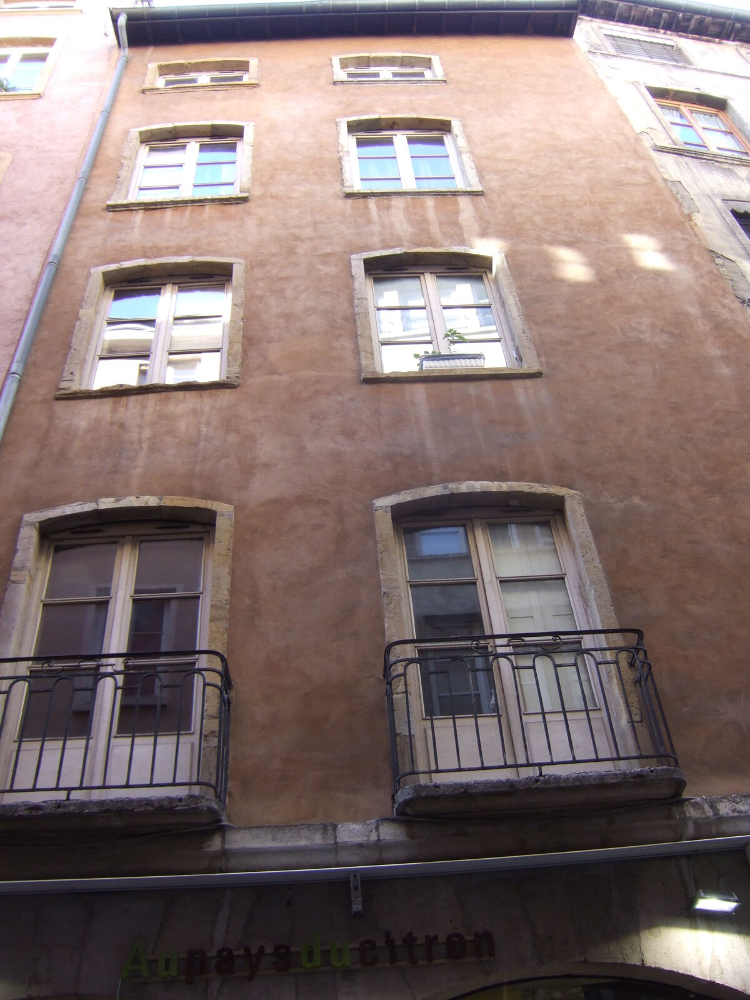
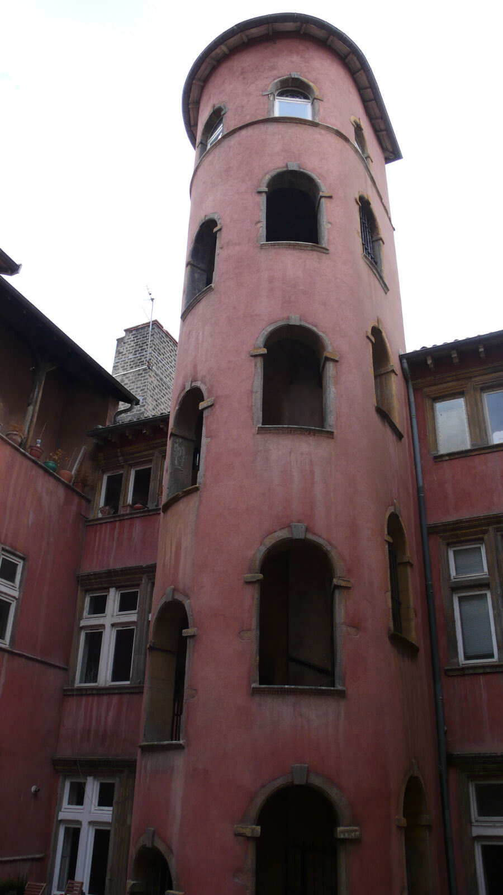

Home / Jewish Lyon guide / Kosher ski holidays in the French Alps
Kosher ski holidays in the French Alps
where to pray, who to call, what to bring from Lyon
A kosher ski week in France takes planning. In winter, Rabbi Daniel Belaïch runs Chabad services in Courchevel 1850 and Megève; no Chabad or synagogue service is published for Val Thorens, Les Arcs, Tignes, Val d'Isère, La Plagne or Chamonix. Private operators list kosher chalets and hotels in a dozen resorts. Supervision is rarely published, so you ask before you book. Lyon is the place to land, shop and stop for a few hours on the way up. We guide in Lyon only: we sell no ski package, no transport and no stay.
- Courchevel and Megève minyanim
- Programs listed by resort
- Land and shop in Lyon
- Checked 7 October 2026

Where to find a minyan in winter
Two resorts have a published Chabad service. Both are run by Rabbi Daniel Belaïch (habadalpes@yahoo.fr, 06 20 60 72 58).
- Courchevel 1850. Services during the winter season, at 389 rue des Tovets. The rabbi writes that he helps with kosher needs, wine and challot for Shabbat, and with a Kaddish.
- Megève. Services in the 'Maison de la Montagne' room, according to the rabbi's own page. A second source gives 136 route Edmond de Rothschild. Write before you go: the venue has changed over the years.
- Les Menuires. A Megillah reading by Rabbi Yhia Lahiany of Chabad Grenoble Alpes is mentioned once on habadgrenoblealpes.com. No standing service is published.
- Val Thorens, Les Arcs, Tignes, Val d'Isère, La Plagne, Chamonix. No Chabad or synagogue service published for winter. Private operators (below) organise a minyan when enough people come.
The Chabad network of the Alps is headed by the Beth Habad of Grenoble, which writes that it offers 'kosher meals in the resort' (Repas cacher en station). Ask them what is available this season.
Chabad contacts 3
- Synagogue at Hôtel Le Mont Charvin, Rabbi Daniel Belaïch Winter season. Wine and challot for Shabbat on request389 rue des Tovets, 73120 CourchevelMap
- Chabad of the Alps in Megève, Rabbi Daniel Belaïch Winter. habadalpes@yahoo.fr. Venue: confirm before you come136 route Edmond de Rothschild, 74120 MegèveMap
- Beth Habad de Grenoble, Rabbi Yhia Lahiany Heads the Chabad network of the Alps: habadgrenoblealpes.com. The site shows 04 85 02 84 47: call both10 rue Lazare Carnot, 38000 GrenobleMap
Sources: synalpes.wordpress.com (Courchevel and Megève), habadgrenoblealpes.com, chabad.org. Not verified by phone. Call before you go.
Kosher ski programs listed by resort
The directory skikosher.com lists these programs in France for the 2026/27 season. It states that its entries are not verified unless marked so. Supervision, menus and prices are not on the listings we read: ask each operator who supervises the kitchen before you pay.
- Val Thorens and Orelle (Trois Vallées): Snow Riders apartments, 3 to 10 December 2026; Snow Riders Orelle, 17 to 22 January 2027; Stoliski Orelle, winter 2026/27. Orelle is the valley below Val Thorens.
- Les Arcs 2000: Chalet Albarelle, 17 to 21 and 21 to 28 January 2027.
- Tignes: Snow Riders Tignes Village Montana, 3 to 10 December 2026.
- Morzine (Portes du Soleil): Chalet Morzine, 10 to 17 and 17 to 22 January 2027.
- Avoriaz (Portes du Soleil): L'Amara, 2027 season.
- La Toussuire (Les Sybelles): Hotel Club J, ski season.
- Montgenèvre: MMV, January 2027.
We do not recommend, rate or rank these operators. They are listed because a named source lists them. Source: skikosher.com, read on 7 October 2026.
Shabbat on the mountain
Candle lighting in the Alps is not the Lyon time, and it changes every week. Look it up for your resort with Hebcal, and ask your Chabad contact for the service times.
- Plan the week around it. Lifts and skiing are not part of Shabbat for an observant family. Choose a chalet or hotel close to your minyan, so you can walk.
- Ask the property three questions. Is there a Shabbat key or a door that opens without a card? Are lights and heating on a timer? Can food be kept warm before Shabbat?
- Cook before it starts. Prepare the Friday meal on Thursday or Friday morning, and carry the food up with you.
- Know your nearest minyan. Write it down before you leave Lyon: mobile networks drop in the valleys.
For halakhic questions, ask your own rabbi. We give practical points only. See also Shabbat in Lyon.
Kosher food in the resort
We found no published kosher shop in the resorts. We found no published delivery from Lyon or Geneva either. Plan to bring your food from Lyon: the shops are on our page Lyon, the gateway to the Alps. The Courchevel rabbi offers help with wine and challot. The operators above provide meals in their own programs: ask who supervises.
Private chefs advertise 'glatt kosher' cooking in Megève, Chamonix and Courchevel. Their supervision is not stated on their websites, so we do not list them as kosher hotels. Ask for the certificate.
From Lyon to your resort
- 1
Land in Lyon
Lyon-Saint-Exupéry is two to three hours from most Savoie resorts. Drive times for 13 resorts are on our gateway page.
- 2
Shop kosher
Buy meat, bread and dairy at Hypercacher, Lilly Market or the butchers. Pack a cooler bag.
- 3
Take our 3 hour Stopover
Your own transport waits while we guide you in Vieux Lyon and inside the Grande Synagogue. 390 € per group of 1 to 5 people. See the Stopover tour.
- 4
Drive up
Your driver takes you to the resort. We never guide on Shabbat or on Jewish holidays.
Safety, without alarm
Most trips pass without incident. We cannot promise zero risk. Our advice is simple.
- Keep your plans to your group, and do not post your hotel or route in real time.
- Choose your own level of visibility in public: some travellers wear a cap rather than a kippa outside.
- Travel with a companion at night.
- Tell us if you have concerns: we adapt. A professional escort is available on request on our tours, priced separately and quoted on demand.
More in our honest FAQ.
The resorts on the map
Town-level pins, not street addresses, except Grenoble.




Kosher ski: questions
Which French ski resorts have a kosher minyan?
Courchevel 1850 and Megève have a Chabad service in winter, run by Rabbi Daniel Belaïch. Other resorts have no published service: private operators organise one when enough people come.
Are there kosher ski holiday operators in France?
Skikosher.com lists programs in Val Thorens and Orelle, Les Arcs 2000, Tignes, Morzine, Avoriaz, La Toussuire and Montgenèvre for 2026/27. The site does not verify its entries, so ask who supervises.
Can we get kosher food delivered to the resort?
We found no published delivery. Bring your food from Lyon, and ask the Chabad rabbi for wine and challot.
Do observant families ski on Shabbat?
No. Lifts and skiing are not part of Shabbat for an observant family. Choose lodging near your minyan and cook before Shabbat. For a ruling, ask your own rabbi.
How do we fit Lyon into a ski week?
Land in Lyon, shop kosher, take our 3 hour Stopover with the Grande Synagogue, then drive two to three hours to the resort.
Do you sell ski packages or transfers?
No. We guide in Lyon. We do not sell transport or lodging.
Keep reading
Sources: synalpes.wordpress.com, habadgrenoblealpes.com, skikosher.com, chabad.org. Compiled by Mishpacha Tours from these sources. Checked 7 October 2026.